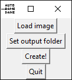
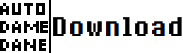

Auto Dame Dame
Auto Dame Dane is a tool to create Dame Dane/baka mitai memes.
screenshot:

REQUIREMENTS:
•A reasonably powerful cpu (tested on ryzen 5 1400: it took about 15 minutes)
•2.02GB free space
•A 256X256 image of a face
Download:
